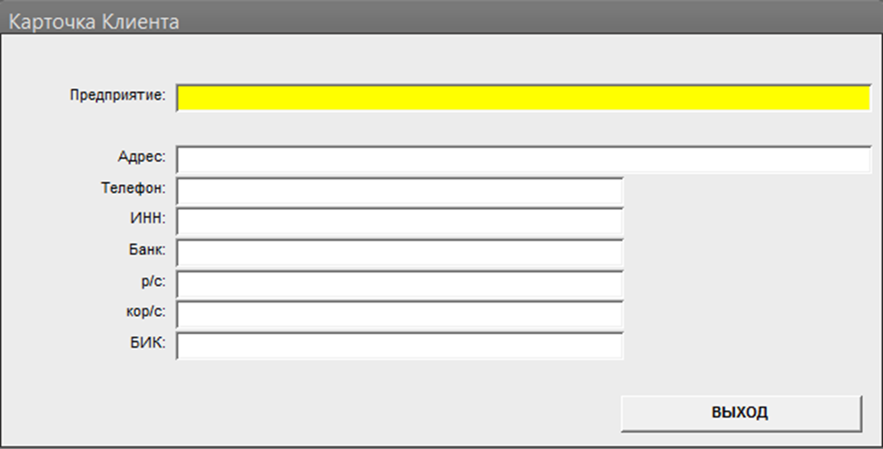

Подсветка активного поля в форме
Изменяет цвет фона поля в форме на время пребывания в нем фокуса - функциональной нагрузки -НОЛЬ - за то мигающий курсор, глазами (возможно усталыми) искать не надо. В данном случае с белого цвета (фон по умолчанию) - на желтый
Для подсвечиваемых полей необходимо установить свойства событий:
Получение фокуса: =esFocusInOut("Имя Формы";-1)
Потеря фокуса: =esFocusInOut("Имя Формы")
Можно добиться примерно того же результата и без кода - просто задайте цвет фона полей - а затем сделайте их прозрачными - при получении фокуса поле будет подсвечиваться ранее заданным цветом. Будет только один недостаток - не активные поля имеют тот же цвет что и форма.
Примечание:
Работаем через точное указание имени формы на случай если их "висит" больше одной, иначе можно было бы работать так:
Screen.ActiveForm.ActiveControl.BackColor = ColorGotFocus
Public Function esFocusInOut(frmName As String, Optional mrk As Boolean = False)
'es 18.01.04
'Подсвечивает активное текстовое поле в открытой форме
'========================================================
Const ColorGotFocus As Long = 10092543 'Цвет активного (желтый)
Const ColorNoFocus As Long = 16777215 'Цвет не активного (белый)
On Error GoTo FocusInOutErr
Select Case mrk
Case True 'Вход в поле (контроль)
Forms(frmName).ActiveControl.BackColor = ColorGotFocus
Case False 'Выход из контрола
Forms(frmName).ActiveControl.BackColor = ColorNoFocus
End Select
Exit Function
FocusInOutErr:
Err.Clear
End Function
Результат может выглядеть так:
